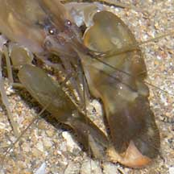
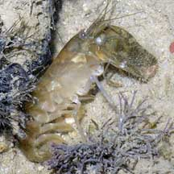
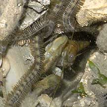

|
|
| shrimps text index | photo index |
| Phylum Arthropoda > Subphylum Crustacea > Class Malacostraca > Order Decapoda > prawns and shrimps |
| Snapping
shrimps Family Alpheidae updated Dec 2019
Where seen? You will most likely hear a snapping shrimp before you see one. These little creatures make the incessant pops that you hear at low tide. They range from tiny ones to rather large ones that can pack a really loud pop. They are common on many of our shores, on mudflats, sandy shores, in seagrass meadows, rocky areas and reefs. But they are often tucked away in their burrows or other hiding places such as under rocks, even under carpet anemones and within sponges. Snapping shrimps forage outside their burrows more actively at night. What are snapping shrimps? Snapping shrimps are crustaceans that belong to Family Alpheidae. Features: 2-7cm long. A snapping shrimp has one of its pincers greatly enlarged. This pincer may even be as long as its entire body! The enlarged pincer can produce a very loud sound. The blast stuns prey like tiny fish and cracks the shells of small clams. It is also used to warn off predators and intimidate rival snapping shrimps. It crawls slowly on the sea bottom with long walking legs. It can make a quick getaway by contracting its muscular flexible abdomen and broad fan-shaped tail. The shrimp has small eyes, which is probably why some live together with gobies that have much better eyesight (see below). |
 One pincer greatly enlarged. Pulau Sekudu, Jun 05 |
 Sideview of the shrimp St. John's Island, May 06 |
 Using the small pincer to carry things. Labrador, May 02 |
| The science of The Sound: A study of one species of snapping shrimp shows the pincer has a moveable 'finger' held at right angles to a matching 'socket' on the opposite side. When the 'finger' is released, it plunges rapidly into the socket, and an explosive sound results. The snapping sound is not the result of the finger hitting the socket, i.e., not like the sound of hands clapping. Rather, a high-speed jet of water shoots out of the socket due to extremely rapid compression as the 'finger' plunges into the socket. This jet vapourises the water and creates large bubbles. The bubbles rapidly collapse (called cavitation), releasing an extremely loud sound as well as a flash of light, and for a brief moment, at high temperatures. These findings are possibly useful for naval applications as the sound of snapping shrimps seriously interfere with sonar detection in shallow seas. In fact, snapping shrimps have been studied since World War II as their sounds interfered with the detection of hostile submarines! |
 This shrimp shares its burrow with a brittle star. Chek Jawa, Jul 05 |
 A Many-band snapping shrimp sharing a burrow with a Pink-speckled shrimp-goby. Kusu Island, Aug 08 |
 A Many-band snapping shrimp sharing a burrow with a Saddled shrimp-goby. Labrador, May 05. |
| Shrimpy friends: Some species
live in symbiosis with corals, sponges, sea fans and other animals.
The most amazing must be the
relationship between the snapping shrimp and goby. The shrimp
goby lives in the same burrow with a snapping shrimp. With keener
eyesight, the goby keeps a look-out while the shrimp busily digs out
and maintains their shared home. The shrimp is literally constantly
in touch with the goby with at least one of its antennae always on
the goby. When the goby darts into the burrow, the shrimp is right
behind it! Colonial shrimps? A kind of snapping shrimp (Synalpheaus regalis) that lives in sponges in the coral reefs of Belize were found to form colonies much like termites do. One 'queen' prawn produces all the members of the colony, which attack members of other colonies but are peaceful towards members of their own colony. Status and threats: Most of our snapping shrimps are not listed among the endangered animals of Singapore, except for the Crinoid snapping shrimp (Synalpheus stimpsoni). This tiny shrimp (about 1cm) lives in pairs on feather stars (crinoids), feeding off the mucus of its host. It is threatened by reef destruction and siltation. |
| Some Snapping shrimps on Singapore shores |


| Family
Alpheidae recorded for Singapore from Wee Y.C. and Peter K. L. Ng. 1994. A First Look at Biodiversity in Singapore. *in red are those listed among the threatened animals of Singapore from Davison, G.W. H. and P. K. L. Ng and Ho Hua Chew, 2008. The Singapore Red Data Book: Threatened plants and animals of Singapore. +from our observation ++from The Biodiversity of Singapore, Lee Kong Chian Natural History Museum. **from WORMS
|
Links
|